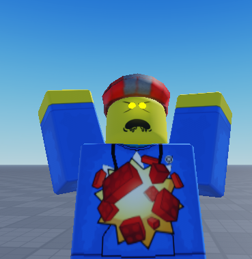

i gotta make a devlog, i don't have anywhere to share my cool stuff now. god, i'm getting lots of ego again
if you haven't known, i'm making a zombie game inspired by g&b and some other games related to zombies or about zombies. survive the longest in an apocalyptic bordered-off city whilst trying to fend for your life against zombies until you eventually join them. when you do, you can bring down fellow survivors along with you. pretty cool, right?

the basic stuff is down, like infection and stuff and some attacks and stuff. it's gonna be a long ride full of twists and turns, yadda yadda.
anyways, more about the game concept, eh?!?!
the shambler is your basic zombie, slow and stuff, not strong attacks but great in crowds. it has yellow eyes and a scratch and grab attack.
the runner is like the fast zombie. very fast but incredibly weak attacks, usually for helping other zombies types. it has red eyes and a stun and pummel attack.
the weeper is a hopefully complex class. you look almost exactly how you looked like when you were a survivor, with your normal animations and some of your items. but you can infect people. the goal? fool your survivors into thinking you're still one of them, and strike. in the first phase (fooling), you have a grab attack only. in the second phase, you have a scratch and pummel attack from the shambler and weeper, although they are incredibly weak.
hopefully these classes go hand in hand with eachother so that teamwork is incredibly strong while also allowing a solo kinda thing for all classes.
for the worrying part of the log, the only thing im worried about is burnout. this game sounds like a really good idea to me and i don't want to put it to waste. i even named this log DEVLOG in hopes that it gets somewhere, i'm that deep in. not to mention that i'm incredibly stupid when it comes to luau. i find myself asking very experienced and very cool people how to do specific stuff. and God, although CFrame is useful, i fucking hate it. all I can do is hope that i'll still work on this game, other people think it's cool and I'll improve myself along the way.
what about you? do you like the game idea? is it cool? would you like to be friends with it? would you hold its hands? would you make a never-ending relationship filled with fun memories and experiences to write about?